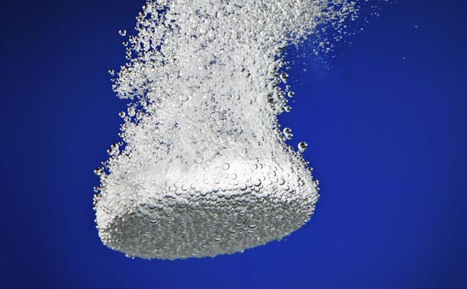

Comment traiter l’eau en voyage
Le traitement de l’eau en voyage est une préocupation majeur et un problème assez complexe. Il existe en effet une multitude de contaminants et aucune solution de purification n’en traite la totalité. À exception de solutions lourdes et chères tel que l’osmose inversée ou la distillation qui ne s’applique pas tellement au voyage.
Et quand on voyage hors des sentiers battus et qu’on crapahute loin, parfois très loin de la civilisation, le problème de la purification de l’eau devient vital. Il faut par conséquent que le système choisi soit parfaitement fiable. Ce qui veut dire efficace, robuste et permette une bonne autonomie.
efficacité
J’entends par efficace que l’on doit être en mesure de pouvoir traiter n’importe quelle source d’eau qu’on viendrait à rencontrer. Que ce soit une rivière boueuse, une flaque vaseuse ou une mare verdâtre saturée d’algues.
Attention cependant, je précise qu’aucun des systèmes de purification présentés ci-dessous ne permet de traiter les polluants chimiques. Il y a parfois confusion à ce sujet. En effet Il existe des filtres proposant une cartouche de charbon activé et Il est vrai qu’un bon filtre à base de charbon activé peut éliminer une vaste gamme de polluants chimiques, et même les métaux lourds pour certains. Mais les cartouches de charbon activé présent en amont de certains filtres céramiques sont bien loin d’être un filtre à charbon à part entière et sont uniquement destinés à neutraliser le gout de vase de l’eau traité. Ils peuvent tout juste réduire la concentration en chlore dans le cas où vous filtreriez de l’eau d’un réseau public. Vous pouvez donc filtrer sans soucis une eau absolument dégueulasse d’un petit pissou loin de la civilisation. mais il faut se méfier d’une rivière dont l’eau relativement claire a déjà traversé plusieurs villes de bonnes tailles ou des régions à culture intensive. À plus forte raison quand on évolue loin de nos contrées où les normes environnementales sont souvent très basses voire inexistantes.
robustesse
L’autre aspect important est la robustesse. Quand on s’engage dans des traversées en autonomie de plusieurs jours voir plusieurs semaines il faut, autant que possible, se mettre à l’abri d’un pépin technique survenant notre système de purification.
Autonomie
Autre aspect important est l’autonomie du système car quand on voyage avec un petit budget on ne peut pas se permettre de se faire livrer régulièrement du matos. Et trouver des solutions de traitement de l’eau en dehors de l’Europe s’avère très délicat.
Nous avons opté pour 2 solutions complémentaires le filtre céramique et les pastilles de purification en appoint.
Le filtre céramique
pros: efficacité / autonomie / robustesse
cons: lourd / cher
Le filtre céramique possède toutes les qualités requises et a été depuis le tout début le système que nous avons adopté. Bien que depuis la France jusqu’au Kazakhstan il ait été une solution un peu sur-dimensionnée et ne justifiait pas forcément son poids non négligeable. En effet les zones sauvages sont relativement restreintes en Europe et les sources d’eau claire généralement abondante. N’étant pas épidémiologiste je vais peut-être dire une connerie mais j’aurais tendance à dire que les familles bactéries d’Europe et du Caucase sont de souche proche à celle de chez nous et comparativement avec celle qu’on trouve dans les tropiques et représentent un moindre danger. En tout cas elles me font moins peur et y a une grande part de psychologie qui intervient dans la décision de traiter ou non telle ou telle eau. ^^
Le filtre céramique permet de traiter absolument toutes les eaux (hors pollutions chimiques). Il y a une polémique sur le fait qu’un filtre en céramique filtre puisse bloquer ou non les virus. En effet les pores de la céramique d’un filtre sont de 0,2 micron alors que les plus petits virus peuvent atteindre 0.005 micron cependant les virus possèdent une charge électrique qui les colles à de plus grosses particules. C’est en filtrant ces particules que les filtres céramiques bloqueraient les virus. Nous ne connaissons pas le fin mot de l’histoire mais nous avons bu des litres et des litres d’eaux stagnantes au cours de nos années de marche et nous n’avons jamais rien contracté (à notre connaissance^^).
Katadyn Combi
Nous avons choisi la marque Katadyn et leur modèle combi. Il est très robuste et nous a jamais fait défaut. Attention cependant le joint sur le piston s’use inévitablement et même si on fait attention à le lubrifier régulièrement (tube de lubrifiant silicone fournit) il viendra un jour où il faudra le remplacer. C’est arrivé dans notre cas après 3 ans de marche dont un an d’utilisation intensive au Kazakhstan. Un jeu de joints de rechange est également fourni mais ne comprend qu’un seul joint pour le piston. Cependant après un petit mail à Katadyn, ils nous ont envoyé gratuitement au siège de l’association, un jeu de joints et un tube de lubrifiant. Bref rien à redire.
Pour gagner un peu en poids je vous conseille de bazarder le charbon (pas la cartouche) qui:
- n’a, aucune utilité (cf: Critères - Efficacité)
- peux devenir un nid à bactérie
- un bon gout de vase c’est le gout de l’aventure. ^^
Le modèle combi a une autonomie de 30 000 litres ce qui est énorme. Trop en fait car cela représenterait 16 ans de marche si l’on filtrait tous les jours 5 litres, ce qui est loin d’être le cas. Forcément cette autonomie et ses autres points forts se payent à la fois par un poids important (530 g) et un prix lui aussi est assez “lourd” (240 €).
Katadyn Mini
Quand je suis passé en mode solo j’ai donc investi dans leur modèle “mini” qui ne pèse que 200 g. bien sûr le filtrage est plus fastidieux car l’amplitude du mouvement du piston est moindre. La surface de la céramique plus petite s’encrasse forcément plus vite. Mais avec les 500g du combi l’énorme gain de poids justifie bien des concessions.
Le changement de modèle aurait donc été une bonne opération si le modèle mini aurait été de la même solidité que son grand frère. Malheureusement ce n’est pas le cas. En effet après trentaine de filtrations à peine le socle qui enchâsse la céramique c’est briser. Sans trop de conséquences au début car l’étanchéité se faisait toujours. Mais une poignée de filtrations plus tard il s’est brisé une seconde fois rendant le filtre inopérant. J’ai recollé les 2 morceaux à la superglue et pour l’instant ça fonctionne mais je ne voudrais pas avoir à compter sur ce filtre rafistolé si je devais m’aventurer loin de tout.
J’ai écrit à Katadyn pour le passage en garantie et une fois de plus ils ont répondu présent! Je devrais avoir une céramique de rechange auprès de leur revendeur de Jakarta. je mettrais à jour l’article quand j’aurais le fin mot de l’histoire. Il faut savoir que la céramique est la pièce maîtresse du système dont le prix représente presque la moitié de celui du filtre.
Les patilles de purification

Pros: leger / facile
Cons: requière une eau clair / péremption / 30 min d’attente
Le problème majeur des traitements chimiques et qu’il faille une eau relativement claire pour être pleinement efficace ce qui n’est souvent pas le cas. Cette solution ne peut donc se suffire à elle-même. L’autre souci c’est que ces pastilles ont une date de péremption. Elles ont une durée de vie qui va 4 à 5 ans selon les produits. J’ai lu sur le forum David Manise qu’un membre aurait testé en laboratoire l’efficacité d’un tube de Micropur liquide MF1000F (eau de javel concentrée Ion argent) périmés depuis 3 ans et les résultats révélés une action quasi identique.
Moi mes Micropurs Forte devrait être périmés depuis plus de 2 ans maintenant mais je continue à les utiliser malgré le fait qu’après 3 ans dans le sac à dos les pastilles oxident l’aluminium de l’opercule de leur emballage alors qu’elles sont elles-mêmes stockées dans des boîtes étanches. Est-ce que ces pastilles sont devenu de simple placebo? J’aimerais bien le savoir…
Autre inconvénient mineur c’est qu’il faille, pour que l’eau soit pleinement traitée, attendre entre 30 min, jusqu’à 4 heures si les conditions sont particulièrement défavorables. Température proche de zéro ou eau légèrement trouble. Et quand une bonne soif dans le gosié, une demi-heure c’est déjà très long.
Mais sinon c’est super pratique et ça pèse pas grand-chose. J’utilise les pastilles quand l’eau du ruisseau est limpide et qu’on hésiterait même à boire à tel quel. Ou quand j’ai un petit doute sur une eau qu’on me donne et que j’ai la flemme de sortir le filtre. Sans compter que filtrer l’eau sous le nez de celui qui nous la donne c’est un peu comme lui dire que son eau n’est pas assez bien pour nous.
Quel Comprimés choisir?

Il est difficile de faire un choix libre et éclairé en la matière. En effet il en plus d’avoir un grand nombre de marque et composé différents, chacun se tire la bourre et crache sur leurs concurrents par l’intermédiaire d’articles que je suppose fortement d’être payé par l’une des parties. Par exemple celui ci clairement biaisé en faveur d’Aquatab
Il y a 3 types de principe actif différent.
- NaDCC qui une fois dissoute va produire de la free-chlorine (eau de javel) qui va tuer les germes. La free-chlorine en se dégradant génère des Trihalomethanes pas terrible pour la santé(Source)
Les marques en France sont: Aquatabs, micropure (la version Forte), Oasis - Chlorine Dioxyde qui elle va produire une forme d’oxygène actif et va tuer les germes par oxydation. De l’oxygène, ça sonne mieux non? mais la chlorine dioxyde en se dégradant génère aussi des petites douceurs comme le chlorite et du chlorate, pas terrible non plus. (Source)
- Les produits à base d’iode, Ici c’est l’iode elle-même qui va tuer les germes. Une fois absobé L’iode se transforme en iodure qui ce stock dans la thyroid ce qui peut poser des problèmes à ceux qui souffre de trouble thyroïdien et aux femmes enceintes. (Source)
Tous ces agents ne sont pas nouveaux et tous été testé et approuvé par les agences de veille sanitaires. D’après mes recherches il n’y a pas d’éléments notables accréditants qu’un agent serait plus nocif qu’un autre. Quant à leur efficacité il semblerait que la chlorine Dioxyde semble se démarquer un peu du lot.
- Elle serait légèrement plus efficace. (Source)
- Elle aurait une meilleure efficacité contre les protozaires, en particulier pour Cryptosporidium qui passe par une phase sporique particulièrement résistante. (Source).
- Son action serait moins dépendante du pH de l’eau traité comm ce serait le cas pour le NaDCC (Source)
Nous n’étions pas tant renseignés au début du voyage. Nous avions simplement choisi les Micropur Forte MF 1T de Katadyn, probablement parce que c’était la marque de notre filtre et que la boîte était rouge et qu’il y avait marqué “Forte” dessus. Un choix guidé purement par le marketing et qui s’avère d’autant plus ironique que cette version “forte” de Micropur abandonne justement le chloride dioxyde au profit du NaDCC semble-t-il moins efficace.
Je ne connais pas la raison mais il semble qu’il soit difficile de trouver des comprimés de chlorine dioxide en France. Katadyn m’a confirmé par mail qu’ils continuent de proposer leur version du produit (Micropur MP1) pour le marché français mais dans les faits il semblerait que ce soit en rupture de stock partout.